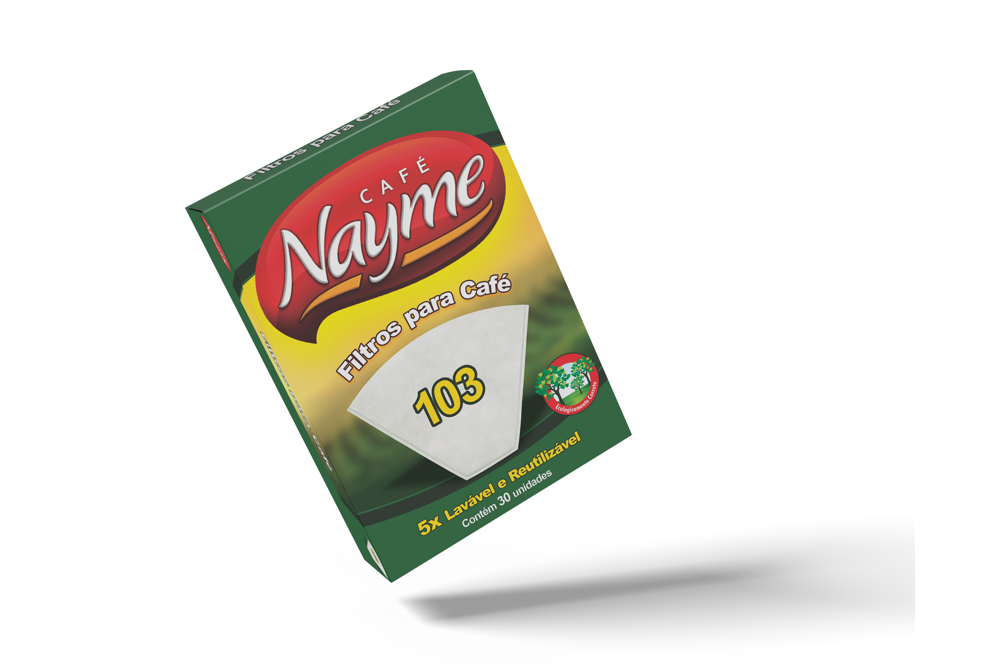
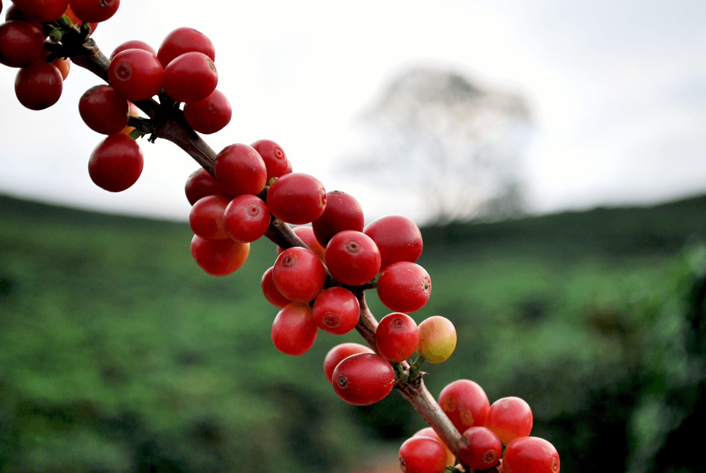
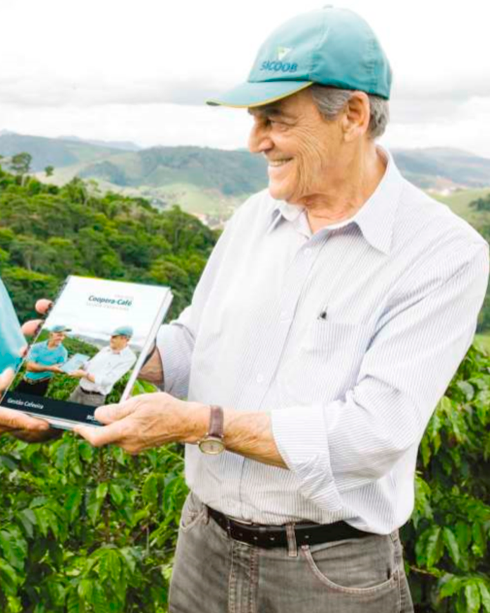
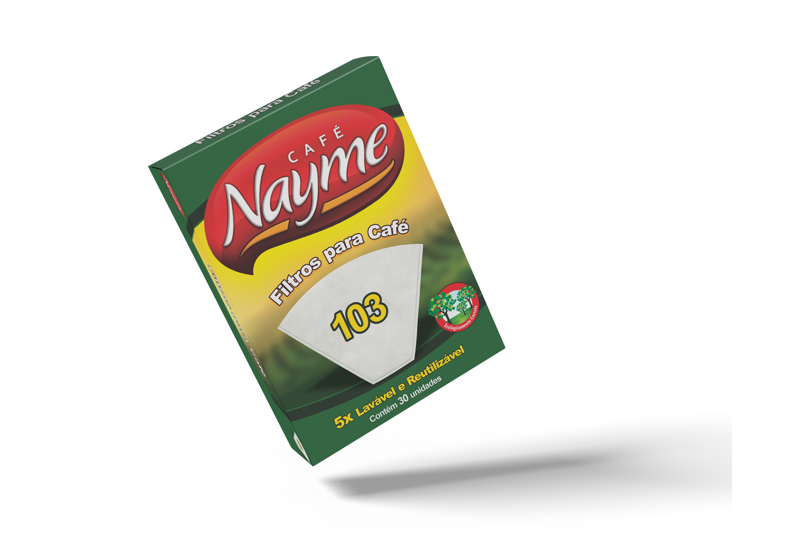
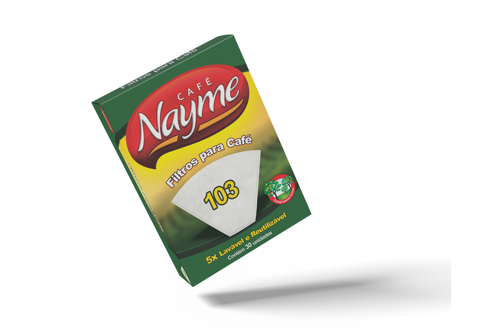

Queremos que nosso café chegue sempre à sua mesa com aquele aroma e sabor especial. E é por isso que cuidamos de toda a produção: colheita, torra, embalagem, distribuição... Tudo para garantir a qualidade de sempre e fazer o seu dia melhor!
Temos o café torrado e moído na torra tradicional e na extra forte, ambar em embalagens com 250g e 500g. Além disso, contamos com os filtros para café, lavavel e reutilizável, sempre pensando no melhor para o meio ambiente!

Sobre nós
Minas Gerais é o estado com maior produção de café do Brasil (26,6 milhões de sacas), o que corresponde a mais de 50% da produção nacional do produto e 17% da produção mundial! O café Nayme só podia ser mineiro né?!
Isso mesmo, nossa fazenda produtora fica nas montanhas mineiras, bem no interior, a querida Manhuaçu, muito conhecida como a capital do café. Além de muitos produtores em toda região, o comércio do café gira a economia local.
E o nosso segredo para levar o melhor sabor do café até vocês é: CARINHO! Amamos cuidar de cada processo da produção do café, para que tenhamos certeza de que ele fará o seu dia melhor!

Nossa história
Nayme José de Salles começou trabalhando no comércio de café em 1951, vivenciando os momentos marcantes da cafeicultura na região da Zona da Mata Mineira e no mundo. Viu queima de café, erradicação e renovação do parque cafeeiro, vivendo reflexos de secas e geadas históricas. Foi pioneiro em diferenciar pelo olfato os cafés de qualidade superior da nossa região, definindo micro regiões onde despontavam cafés com características relevantes.
Em 1976, juntamente com os filhos, passa a trabalhar na área de produção acumulando um portfólio de conhecimento que permitiu que em 2015 principiasse no ramo de torrado e moído, determinando qualidade e responsabilidade nos possíveis nichos de mercado do qual participa, sempre buscando a satisfação do cliente, pelo prazer de trazer no interior da embalagem SABOR e AROMA, que faz do seu cafezinho sempre um momento de prazer.

Nos acompanhe nas redes sociais
Quer saber mais sobre nossos produtos? Entre em contato com a gente:

 
